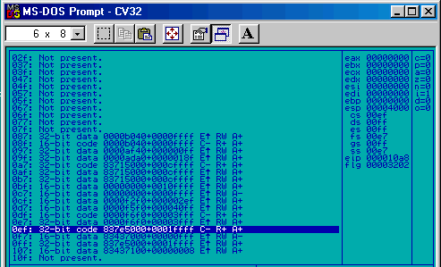

Up to this point in ECE 291, the MP's have been written in real mode, with a source design that reflects real mode assumptions. When writing code for protected mode, the source organization will change, but only slightly. The primary differences are:
In protected mode, SEGMENT would be a bit of a misnomer, as while segment registers are still used to address memory, they hold selectors instead of segments (see Section 17.2.3 for more information about this). In NASM, SEGMENT and SECTION are treated identically internally, so this is just a semantic change, not a functional one.
Unlike the real mode MPs, the DJGPP platform used for writing protected mode code in ECE 291 provides a stack, so there's no need for the assembly source to provide one.
As the assembly program is linked to the DJGPP startup code also means the program execution doesn't begin at the ..start label as it did in real mode, but at the C-style function _main.
Tip: _main is called in exactly the same was as how it's called for C programs. Those that are already familiar with C may know about the two arguments passed (on the stack, using the C calling convention) to this function: int argc and char *argv[], which can be used to retrieve the command-line arguments passed to the program. See a C reference for information on the meanings of these two parameters and how to use them to read command-line arguments.
As Section 17.2.3.1 shows, DS and CS actually do point to the same memory space in protected mode, just as they did in real mode, but CS and DS do not hold the same numerical value.
Caution: As CS is set up to be read-only, if the program code does set DS=CS at the beginning of the program, the data segment becomes read only!
This change is a conceptually major one: the addition of an uninitialized data segment. What does this mean? All data variables declared in the initialized data section take up space in the executable image on disk. This data is then copied into memory when the program is run, along with the program code. Data placed in the uninitialized section, on the other hand, does not take up space on disk. When the program is run, extra space is tacked onto the end of the data segment (accessed with DS) and initialized to 0.
There are uninitialized equivalents to the db, dw, etc. family of data declarations that start with "res" (reserve) instead of "d" (declare), e.g. resb, resw, etc. These "reserve" equivalents just take a single number: the number of data items of this size to reserve space for. Within the .bss section, these equivalents must be used instead of db and the like.
Use the .bss section instead of the .data section for variables that can be 0 at program startup. Remember that the "res" family takes the number of items, so:
SECTION .data a db 0 b dw 0,0,0 c dd 0,0
Becomes:
SECTION .bss a resb 1 b resw 3 c resd 2
The code segment is now called .text and the data segment is called .data. The segments changed names to match the segment names used by DJGPP. These names are also considered standard on the UNIX platform.
Why is the uninitialized section called .bss and the code section called .text? Both names have a long history in UNIX, but the history of .bss is perhaps the most interesting.
The address space is one, big, flat 32-bit space. When accessing memory, it needs to be accessed with 32-bit addresses. [DI] is as meaningless as [DL] was in real mode.
Caution: NASM will accept [DI] as a memory address without warning about its use! This can work, but only if the address fits in DI (eg, is in the first 64k). As this is not usually the case (especially when doing operations with large buffers), this doesn't usually work. Make sure to use the full 32-bit registers when doing address computations!
You can access memory like this [segment : any_32-bit_register + any_other_32-bit_register*(1/2/4/8) + constant] This means that this is all legal:
| mov al, [eax+4*ebx+12]
; ds is the assumed
segment mov ax, [gs:ecx-99] ; ds, es, fs, and gs are ALL segment registers. mov edx, [myarray + ebx*4] ; Locally multiply by four before to access array. |
If you have a picture in your head of how segments work in real mode, great. If you know about how to calculate a linear address by multiplying the segment by 16 and adding the offset, great. You'll need this for the exam. You won't need this for protected mode. The segment registers in protected mode are now the selector registers. A selector is an index into a descriptor table. In the case of a single application program, it's an index into the Local Descriptor Table (LDT). The LDT is a table of (not suprisingly) descriptors. Descriptors hold information about a sub-region of the 4 Gigabyte 32-bit physical address space. The reason we need this table is because in protected mode, not every segment is the same size. Enough of theory; time to look at how this actually works, in the debugger.

To get the linear address for mov EAX, dword [DS:EBX], the processor looks in the Local Descriptor Table for DS's linear starting address. It then adds the offset (in this case the value in EBX) to get the linear address.
While the processor is doing this, it checks the offset against the segment length in the LDT. If the offset is "out of range" when it preforms the check, the processor causes a General Protection Fault and calls interrupt 13h. This interrupt goes to the operating system which promptly terminates the program for trying to access memory that it doesn't own. (This is one of the ways memory is protected in protected mode). "So why can't the program just go into the Local Descriptor Table and give the segment a huge length?" Programs are never allowed to deal with the Local Descriptor Table directly. They must request additional memory from the OS, and the OS changes the descriptor table. The OS also keeps track of what programs have what memory and shuts down misbehaving programs.
Tip: General Protection Faults are the primary cause of program crashes when programming in protected mode. When a fault occurs outside of a debugger, the program is terminated and information is printed to the screen that shows all the registers, the segments and their limits, and a stack trace. In a debugger, the debugger halts the program, highlighting the line that caused the error.
Once the processor has the linear address and has verified the offset is correct, it looks in the processor's Virtual Memory Page Table to get the physical address, which is what actually gets sent out on the bus. If the Page table says that the particular page required is not in physical memory, the processor causes a "Page Fault" and the operating system (in this case, Windows) will have to load it off of disk. (This procedure is often called swapping). Note that there are a few more levels of abstraction here than there were in real mode. ECE 291 doesn't cover Virtual Memory or swapping, so this paragraph really isn't that important to programming in ECE 291, except for the following:
Important: It's possible for memory areas accessible to the program to not actually be in memory at the time. This will be particularly important when writing interrupt handlers (also called interrupt service routines). The details surrounding ISRs in protected mode, using PModeLib, are covered in Section 18.7.
Suprisingly enough, calling interrupts in protected mode under DPMI is very similar to calling interrupts in real mode. Even though this isn't 16-bit DOS and DOS interrupt handlers are 16-bit code, most interrupt calls get mirrored automatically by DPMI from protected to real mode. However, there are many situations for which this automatic translation doesn't work. Keep reading for details!
Unlike in real mode, where the interrupt vector table is always at address 00000h, in protected mode, the Interrupt Descriptor Table can be anywhere in memory and is protected by the processor and the OS. Also unlike the real-mode interrupt vector table, the IDT stores additional information about the various handlers, but it is essentially still a "jump table" indexed on the interrupt number.
Under DPMI, the entries in the IDT point to DPMI's own interrupt service routines. For most of these, DPMI is kind enough to just drop into real mode, call the corresponding real-mode interrupt, and return to protected mode before returning to the calling program. Pretty complicated, but DPMI handles all these extra steps automatically.
For interrupts that don't use segment registers, this automatic translation works extremely well. Interrupts that have inputs or outputs in segment registers, however, need to be called using a special DPMI function, because the segment registers change when switching from protected to real mode and back. Also, even if the segment registers didn't change, in protected mode setting a segment register to a real-mode segment value will (usually) cause a General Protection Fault, because the segment registers must hold a valid selector value while in protected mode. DPMI function 0300h, "Simulate Real Mode Interrupt," allows the program to set all registers that can be read by the real-mode interrupt handler. After the interrupt returns, the values of all the registers set by the real-mode interrupt handler can be read back by the protected mode program.
However, there's a more fundamental problem here! Most interrupts that take segment registers as inputs use them to point to data, and they use the segment registers in real-mode fashion (not as selectors). How can a protected mode program give a real-mode interrupt data if this is the case?
Unfortunately, the program can't just call a magic function that translates a selector into a segment. This is impossible unless the selector is located in the 20-bit address space of real mode and is less than 64k in length. Even if it were possible, the offset would still be limited to 64k. Fortunately, DPMI provides an alternative solution: providing a way for a protected mode program to allocate a segment of memory that's guaranteed to be accessible in real mode. DPMI function 0100h, "Allocate DOS Memory Block," allocates space in the low 1 MB of RAM (the 20-bit address space visible to real-mode programs), and returns both a selector that can be used to access this memory from protected mode and a segment that can be used to access this memory from real mode.
Armed with the selector and segment values, a protected mode program can copy the data it wants to give the real-mode interrupt into this memory and give the real-mode segment to the interrupt. The real-mode interrupt then reads the data, and everything works great!
Naturally, the same process can work in reverse: the real-mode interrupt writing into the memory and the protected mode program reading out of it after the interrupt returns.
So how does this DPMI function actually work internally? How does it ensure the memory allocation is in the low 1 MB of RAM? DPMI function 0100h, "Allocate DOS Memory Block," has to go through a number of steps to accomplish this:
Actually, all of these steps can be accomplished without too much trouble by normal protected mode code. However, it's far easier just to use the DPMI interrupt.
Before exiting, DPMI function 0101h, "Free DOS Memory Block," should be used to free the memory allocated by DPMI function 0100h.
The first example program takes advantage of the automatic mirroring of interrupts into real mode by DPMI. It gets the current time using DOS interrupt 21h, function 2Ch.
BITS 32
GLOBAL _main
_main:
mov ah, 2Ch ; Function 2Ch
int 21h ; Call DOS interrupt.
; (Automatically mirrored by DPMI)
; At this point all the return values should be in the protected mode
; registers (CH, CL, DH, DL).
ret ; Return to DOS
Build this example program the same way "basic" was built earlier. Run it under CV32 and look at the registers after the interrupt call to make sure it did actually return the correct time.
Task 6: Output a String to the Screen
This example is going to perform a much more complex task than the first. Essentially it's the old LIB291 dspmsg in protected mode. All dspmsg did internally was call DOS interrupt 21h, function 09h.
The first thing to notice about function 09h is that one of the inputs uses a segment register (DS). This should immediately bring the discussion in Section 17.3.2 to mind: we'll need to use DPMI function 0300h to make the interrupt call, as we can't set DS without using it.
The second thing to notice is that the input takes a pointer to data that the protected mode program needs to provide. This means the program will need to use the procedure detailed in Section 17.3.3 to put the string someplace where DOS can get to it.
BITS 32
GLOBAL _main
DOS_BUFFER_LEN equ 128 ; DOS buffer length, in bytes
SECTION .bss
; DPMI Registers structure used by INT 31h, function 0300h
DPMI_Regs
DPMI_EDI resd 1
DPMI_ESI resd 1
DPMI_EBP resd 1
DPMI_RESO resd 1
DPMI_EBX resd 1
DPMI_EDX resd 1
DPMI_ECX resd 1
DPMI_EAX resd 1
DPMI_FLAGS resw 1
DPMI_ES resw 1
DPMI_DS resw 1
DPMI_FS resw 1
DPMI_GS resw 1
DPMI_IP resw 1
DPMI_CS resw 1
DPMI_SP resw 1
DPMI_SS resw 1
; These variables will hold the selector and segment of the DOS
; memory block allocated by DPMI.
_Transfer_Buf resw 1
_Transfer_Buf_Seg resw 1
SECTION .data
; String to print to screen
str db 'Hello, World!',13,10,'$'
SECTION .text
_main
; Allocate DOS Memory Block using DPMI
; Note that BX=# of paragraphs, so must divide by 16.
mov ax, 0100h
mov bx, DOS_BUFFER_LEN/16
int 31h
; Save the return info in the Transfer_Buf_* variables.
mov [_Transfer_Buf], dx
mov [_Transfer_Buf_Seg], ax
; When debugging this program, look at the LDT for the
; selector in dx here. It should be labeled as 16-bit
; data, the starting address should = ax << 4, and its
; length should be DOS_BUFFER_LEN-1.
; Now that the memory has been allocated in DOS space,
; copy the string into it. Note that while a loop is
; used here, for larger amounts data (or data of fixed
; size), it would probably make more sense to use a
; string instruction such as rep movsd here.
push es
mov es, dx ; Put the selector into es.
xor ebx, ebx ; Offset into string
.loop:
mov al, [str+ebx] ; Copy from string
mov [es:ebx], al ; Into DOS memory area, starting at offset 0
cmp al, '$' ; Stop at the '$' marker.
jne .loop
pop es
; Set up the input registers for the DOS interrupt in the
; DPMI_Regs structure above.
mov word [DPMI_EAX], 0900h ; Neat trick: even though DPMI_EAX
; is a dword, thanks to little
; endian storing just a word works.
; Note that AH=09h, not AL.
; mov byte [DPMI_EAX+1], 09h would
; have worked here too. Why? :)
mov word [DPMI_EDX], 0 ; Again, only care about the low 16
; bits (DX). Set to 0 because that's
; where the string was copied to!
mov ax, [_Transfer_Buf_Seg] ; Put the real mode segment into
mov word [DPMI_DS], ax ; the DS variable the DOS interrupt
; sees.
; Now simulate the interrupt using DPMI function 0300h.
mov ax, 0300h ; DPMI function 0300h
mov bl, 21h ; Real mode interrupt number (DOS interrupt)
mov bh, 0 ; No need to set any flags
mov cx, 0 ; Don't copy any stack, not necessary
mov dx, ds ; Point ES:EDI at DPMI_Regs
mov es, dx ; ES=our DS
mov edi, DPMI_Regs ; EDI=offset to DPMI_Regs
int 31h ; Call DPMI, which calls DOS, which prints
; the string!
; Free the DOS memory block before exiting.
mov ax, 0101h
mov dx, [_Transfer_Buf] ; It needs the selector
int 31h
; We're done, exit back to DOS.
ret
Assemble and run the above code. Your first protected mode output! Run it under cv32, and look at the LDT entry of the selector returned by DPMI function 0100h. Play with the code some (until it breaks, and then figure out what's wrong with it)! We'll come back to this code later and rewrite it so it uses PModeLib functions.
Question 5: How would you write and set a protected mode callback or handler? Give some key numbers.
Actually, on second hand, try the program without allocating enough memory for your string and without checking to see if you're writing off the end of your buffer. See what happens when you try to copy it past the end of the buffer.. Question 7: What happened when you didn't allocate enough memory in your buffer? How was the memory was protected? (Thus the name of the mode.) Remember this when your CS MP's crash with the mysterious "Segmentation Fault."
The relevant interrupts here are BIOS functions.
|
INT 16h, 0h - Wait for Key Inputs: Outputs: |
INT 16h, 1h - Determine Keyboard Buffer Status Inputs: Outputs: Note: |
"Determine Keyboard Buffer Status" is useful for things like games where you don't want to stop to wait for a key. You want to move your JarJar around the mine-field only when a key is pressed, but you still want everyone else to shoot at him while you're not hitting keys.
Make your program print out your string until a key is pressed. Then put the ASCII value for the key press into the first character of the string before you print it out one last time.
Task 8: Draw Pixels in 320x200
One last thing before we get into the good stuff. You know about this graphics mode from Lecture 12. Let's see how we can use it in protected mode. To get into the mode is pretty straight forward. Here's the mode switching code from the lecture:
| ; Switch to 320x200x256 Mode mov ah, 0 ; Subfunction to set the mode mov al, 13h ; Mode 13h is 320x200x256 int 10h ; Video BIOS call ; Do your pixel stuff. ; Switch back to text Mode mov ah, 0 mov al, 03h ; Mode 03h is text mode. int 10h |
The hard part here is that in protected mode, you can't just blindly write to segment 0A000h. First of all, segments are meaningless in protected mode. Earlier, you allocated a block of DOS memory and got a selector for it. Now you're going to have to get a selector for the real mode memory for the screen, so this time you give it the real mode address of the memory you want rather than having DPMI find the address of a free block. How do we do this? A look at the DPMI Functions by Functional Group we find 31 0002 - Segment to Descriptor.
|
INT 31h, 0002h - Segment to Descriptor Inputs: |
Make it, run it, and most importantly, look in the Local Descriptor Table (Alt-L) at selector DPMI gave you. This is the best example of how this selector/descriptor stuff works because you can actually see a real, meaningful physical address! Question 9: What did the 320x200x256 color LDT entry look like? Give numbers.